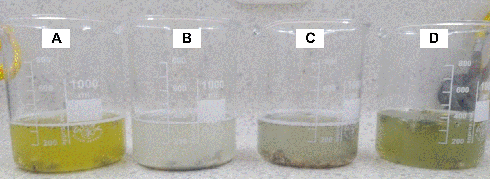
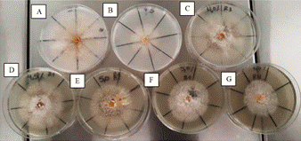
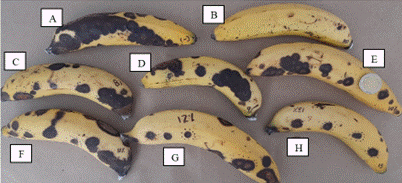
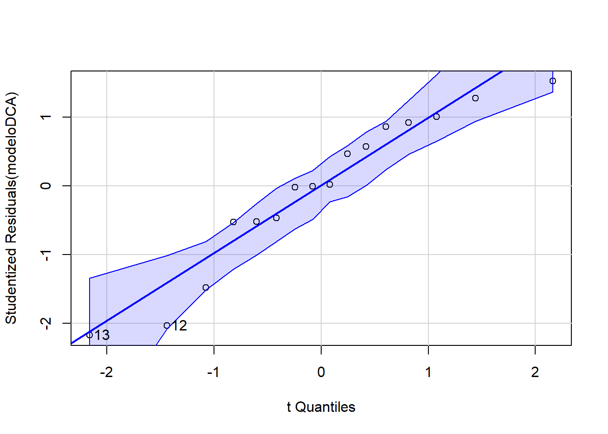
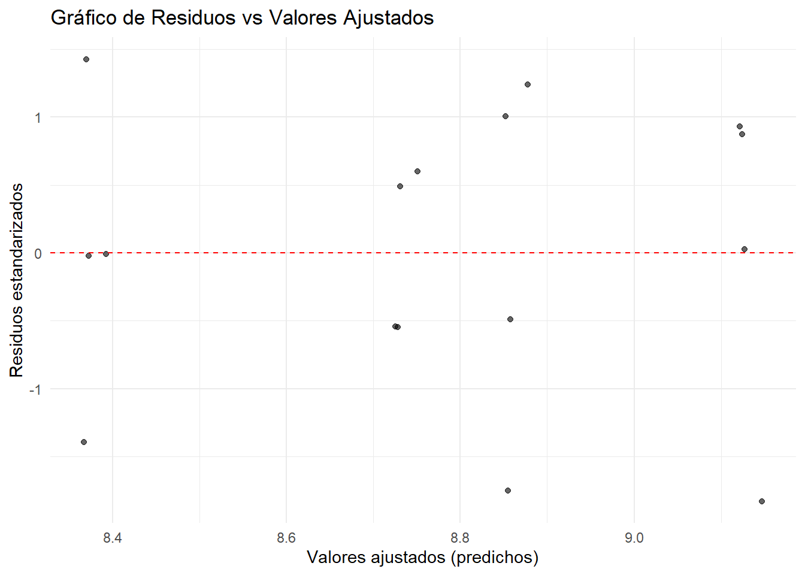

La antracnosis del banano 🍌, causada por Colletotrichum musae (Berk. y M.A. Curtis) Arx, representa una problemática fitosanitaria de considerable relevancia económica en la industria bananera mundial, puesto que genera pérdidas postcosecha que oscilan entre el 10 y 80% debido al deterioro de la calidad visual del fruto, dicho patógeno desarrolla lesiones (formación de acérvulos) de coloración marrón oscuro a negro en el epicarpio del fruto, las cuales afectan la calidad visual del fruto (Vásquez-Castillo et al., 2019).
Tradicionalmente, el manejo de esta epifítia se ha fundamentado en la aplicación de fungicidas sintéticos como: tiabendazol, azoxystrobin y trifloxystrobin; no obstante, estas sustancias generan impactos ambientales adversos y residualidad ((Arias B., 2007), por ello, la búsqueda de alternativas de biocontrol sostenibles ha cobrado especial relevancia, particularmente mediante el uso de extractos fúngicos con propiedades antagónicas.
Metodología: El estudio se estructuró a partir de dos diseños experimentales: un Diseño Completamente al Azar para la evaluación de sustratos, y un Diseño de Medidas Repetidas en el Tiempo para la evaluación de la actividad inhibitoria.
Diseño 1: Sustratos de cultivo para Penicillum sp.
Se empleó un Diseño Completamente al Azar con los siguientes tratamientos: avena en hojuelas, maíz partido, semillas de cebada y arroz blanco. Se prepararon bolsas de polipropileno con cada sustrato, se inocularon con cinco discos de micelio de Penicillum sp. (0.5 mm de diámetro) y se incubaron de forma aleatorizada a 22 ± 2 °C durante ocho días. El experimento se realizó por quintuplicado, considerando cada bolsa como una repetición.
Diseño 2: Evaluación de la actividad inhibitoria
Se implementó un Diseño de Medidas Repetidas en el Tiempo para analizar el efecto de las concentraciones del extracto sobre dos variables de respuesta clave:
Porcentaje de Inhibición del Área de la Lesión (PIAL): Para evaluar la eficacia in vivo.
Porcentaje de Inhibición del Crecimiento Micelial (PICM): Para evaluar la eficacia in vitro.
Las variables independientes fueron las diferentes concentraciones del extracto y los testigos correspondientes, mientras que las variables de respuesta se midieron a lo largo del tiempo para observar la evolución de la inhibición.
Resultados: El maíz partido constituyó el sustrato óptimo para la producción conidial de Penicillium digitatum, alcanzando valores de Log10 9,13 conidios/mL, seguido de la cebada Log10 8,88 conidios/mL (Figura 1).
Figura 1.
Sustratos con Conidios de Penicillium sp.

Nota: Dilución de conidios y sustrato, en solución tween80® 0,01%: Avena (A); Arroz (B); Cebada (C); Maíz Partido (D).
La evaluación in vitro reveló que las concentraciones de extracto crudo de 4,0 al 6,0% generaron Porcentajes de Inhibición del Crecimiento micelial (PICM) del 40 al 50 % respectivamente al quinto día después de la inoculación (ddi) (Figura 2).
Figura 2. Efecto de los tratamientos in vitro frente al crecmiento de Colletotrichum musae.

Nota: Prueba de inhibición in vitro de Colletotrichum musae, frente a diferentes tratamientos. (A) Testigo negativo; (B) Testigo positivo (Amistar a 60mg/100mL); (C) Extracto de Penicillium sp., al 4%; (D) Extracto de Penicillium sp., al 4,5%; (E) Extracto de Penicillium sp., al 5%; (F) Extracto de Penicillium sp., al 5,5%; (G) Extracto de Penicillium sp., al 6%.
Por otro lado, los ensayos in vivo evidenciaron una mayor eficacia del extracto crudo, donde las concentraciones de 8, 9, 10, 11, 12 y 13% generaron porcentajes de inhibición del área de la lesión (PIAL) de 60, 55, 70, 72, 77 y 80% respectivamente (Figura 3), sugiriendo que Penicillium digitatum podría representar una alternativa viable para el manejo preventivo de la antracnosis del banano.
Figura 3.
Efecto in vivo de bananos infectados con Colletotrichum musae en los tratamientos.

Nota: Experimento in vivo de los bananos infectados con 107 conidios de Colletotrichum musae, frente a tratamientos (A los 7 días de la inoculación). (A) Testigo negativo; (B) Azoxystrobin (Testigo positivo); Extractos de Penicillium sp. a (C) 8%; (D) 9%; (E) 10%; (F) 11%; (G) 12%; (H) 13%.
Para mayor información puede consultar: Mejía-Sarmiento, J. S. (2022). Evaluación de Extracto Crudo de Penicillium sp. para la Inhibición del Crecimiento in vitro e in vivo de Colletotrichum musae (Berk. y M. A. Curtis) Arx. Agente Causal de Antracnosis en Banano [Tesis de pregrado, Universidad de Santander UDES]. Repositorio Institucional UDES. https://repositorio.udes.edu.co/handle/001/8674
Estructura de la base de datos
La base de datos utilizada en este análisis corresponde a los resultados de un experimento agrícola que evalúa el comportamiento de cuatro cultivos diferentes bajo condiciones similares de manejo. La tabla contiene tres columnas principales:
Variable
Descripción
Tratamiento
Tipo de cultivo evaluado. Incluye cuatro niveles: Arroz, Avena, Cebada y Maíz.
Repetición
Número de repetición del tratamiento (del 1 al 4). Permite el análisis estadístico con replicación.
Resultado
Valor numérico correspondiente a la variable respuesta medida (por ejemplo, rendimiento en kg/ha).
Pasos para trabajar con R:
Especificar el directorio que me interesa donde se encuentra la base de datos.
Antes e inciar
R lee / (slash o division) y no el de Windows \
En R, setwd() es una función que significa “set working directory” o “establecer el directorio de trabajo”. Se utiliza para definir la carpeta predeterminada en la que R buscará archivos para leer y donde guardará archivos por defecto.
Por ejemplo: setwd (“D:/OneDrive - Universidad de Santander/Material Docente 2025/CodigoR”“)
Min. 1st Qu. Median Mean 3rd Qu. Max.
8.341 8.635 8.792 8.775 8.954 9.141
Convertir las variables en factor
En un diseño experimental, los factores como Tratamiento y Repetición deben declararse como variables categóricas (factor). Esto le indica a R que los niveles de cada variable no son numéricos, sino categorías que representan tratamientos o bloques, permitiendo aplicar correctamente el ANOVA.
# Convertir a factor o numérico según correspondaDCA$Tratamiento <-as.factor(DCA$Tratamiento)DCA$Repeticion <-as.factor(DCA$Repeticion)DCA$Resultado <-as.numeric(DCA$Resultado)
Análisis de la Varianza - ANOVA
Cuando se desea saber si varios grupos (Ej. tratamientos) presentan diferencias reales en sus promedios, una de las herramientas estadísticas más utilizadas es el Análisis de la Varianza, conocido como ANOVA. Esta técnica permite examinar si los valores medios de tres o más grupos son lo suficientemente distintos como para concluir que no se trata de simples fluctuaciones aleatorias.
El enfoque de ANOVA se basa en comparar dos tipos de variación: por un lado, la variabilidad que se observa entre los distintos grupos, y por otro, la variabilidad que existe dentro de cada grupo individual. Si al analizar los datos se encuentra que la variación entre los grupos supera notablemente la que ocurre dentro de ellos, es razonable pensar que las diferencias en los promedios reflejan algo más que el azar. En cambio, si la variabilidad interna es más pronunciada, entonces es posible que las diferencias observadas no sean significativas y respondan a variaciones normales del comportamiento de los datos.
Código de R para ANOVA
modeloDCA <-aov(Resultado ~ Tratamiento + Repeticion, data = DCA)summary(modeloDCA)
Df Sum Sq Mean Sq F value Pr(>F)
Tratamiento 3 1.1794 0.3931 642.488 8.21e-11 ***
Repeticion 3 0.0016 0.0005 0.892 0.482
Residuals 9 0.0055 0.0006
---
Signif. codes: 0 '***' 0.001 '**' 0.01 '*' 0.05 '.' 0.1 ' ' 1
Interpretación: La prueba ANOVA muestra diferencias significativas entre los tratamientos (p < 0.001). El valor de F (642.488) indica que la variación entre tratamientos es mucho mayor que la variación dentro de los grupos, lo que sugiere que al menos uno de los tratamientos afecta significativamente el resultado.
Modelo Lineal
modelo_lm <-lm(Resultado ~ Tratamiento + Repeticion, data = DCA)summary(modelo_lm)
Call:
lm(formula = Resultado ~ Tratamiento + Repeticion, data = DCA)
Residuals:
Min 1Q Median 3Q Max
-0.033923 -0.010081 0.000141 0.016481 0.026449
Coefficients:
Estimate Std. Error t value Pr(>|t|)
(Intercept) 8.75105 0.01636 534.860 < 2e-16 ***
TratamientoAvena -0.35848 0.01749 -20.495 7.32e-09 ***
TratamientoCebada 0.12669 0.01749 7.243 4.85e-05 ***
TratamientoMaiz 0.39630 0.01749 22.657 3.01e-09 ***
Repeticion2 -0.01994 0.01749 -1.140 0.284
Repeticion3 -0.02568 0.01749 -1.468 0.176
Repeticion4 -0.02304 0.01749 -1.317 0.220
---
Signif. codes: 0 '***' 0.001 '**' 0.01 '*' 0.05 '.' 0.1 ' ' 1
Residual standard error: 0.02474 on 9 degrees of freedom
Multiple R-squared: 0.9954, Adjusted R-squared: 0.9923
F-statistic: 321.7 on 6 and 9 DF, p-value: 5.608e-10
Interpretación: El modelo lineal confirma que el tratamiento influye significativamente en los resultados (p < 0.001). El tratamiento “Arroz” actúa como referencia, con una media estimada de 8.75. Comparado con este:
Avena presenta una media significativamente menor (–0.36, p < 0.001).
Cebada muestra un aumento moderado (+0.13, p < 0.001).
Maíz tiene el mayor incremento (+0.40, p < 0.001).
El modelo explica el 99.4% de la variabilidad en los datos (R² = 0.994), y el error estándar residual es bajo (0.0244), lo que indica un ajuste excelente.
Gráfico Boxplot
Se toma el Tratamiento para hacer un boxplot utilizando la variable “Resultado”, pero primero se transformar en factor la variable Tratamiento:
library(ggplot2)DCA$Treatamiento<-factor(DCA$Tratamiento) #transformamos una variable númerica en un factor categóricoggplot(DCA, aes(x = Tratamiento, y = Resultado, fill=Tratamiento)) +geom_boxplot()
Interpretación: Las diferencias en las medianas entre tratamientos son claras y consistentes con los resultados del ANOVA y del modelo lineal, lo que sugiere un efecto significativo del tipo de cultivo sobre la variable resultado.
Supuestos del modelo
Antes de interpretar los resultados, se verifican los supuestos de normalidad, homogeneidad de varianzas e independencia de los residuos.
Normalidad
Para verificar la normalidad de los residuos utilizaremos la prueba de Shapiro-Wilks cuyo script es el siguiente:
shapiro.test(residuals(modeloDCA))
Shapiro-Wilk normality test
data: residuals(modeloDCA)
W = 0.93432, p-value = 0.2851
Interpretación: El test de Shapiro-Wilk aplicado a los residuos del modelo ANOVA devuelve un valor de p = 0.934, que es mucho mayor que 0.05. Esto indica que no hay evidencia estadística para rechazar la hipótesis nula de normalidad. Por lo tanto, se concluye que los residuos del modelo siguen una distribución normal, cumpliendo así uno de los supuestos fundamentales del análisis de varianza.
Gráficos para evaluar la normalidad
Para construir el gráfico QQ (QQ plot) y evaluar la normalidad de los datos, se utiliza la función correspondiente del paquete car. Si no está instalado previamente, es necesario instalar también el paquete auxiliar carData.
library(car) #Grafico de QQ plotlibrary(carData)library(dplyr)library(purrr)qqPlot(modeloDCA)

[1] 12 13
Interpretación: El gráfico QQ muestra que los residuos estandarizados del modelo ANOVA se alinean adecuadamente con la línea diagonal, lo que indica que su distribución es aproximadamente normal. La mayoría de los puntos se ubican dentro de la banda de confianza, y no se observan desviaciones sistemáticas. Esta gráfica complementa el resultado del test de Shapiro-Wilk (p = 0.959), confirmando que se cumple el supuesto de normalidad de los residuos en el modelo.
Homocedasticidad
Para evaluar el supuesto de homogeneidad de varianzas entre los grupos (homocedasticidad), se aplicará la prueba de Bartlett, la cual es apropiada cuando los datos provienen de poblaciones aproximadamente normales. Esta prueba contrasta la hipótesis nula de igualdad de varianzas frente a la alternativa de varianzas diferentes. El procedimiento se implementa mediante el siguiente script:
bartlett.test(Resultado ~ Tratamiento, data = DCA)
Bartlett test of homogeneity of variances
data: Resultado by Tratamiento
Bartlett's K-squared = 2.2722, df = 3, p-value = 0.5179
leveneTest(Resultado ~ Tratamiento, data = DCA)
Levene's Test for Homogeneity of Variance (center = median)
Df F value Pr(>F)
group 3 0.9985 0.4268
12
fligner.test(Resultado ~ Tratamiento, data = DCA)
Fligner-Killeen test of homogeneity of variances
data: Resultado by Tratamiento
Fligner-Killeen:med chi-squared = 3.0752, df = 3, p-value = 0.3802
Interpretación: Dado que el valor de p es mayor que 0.05 (p = 0.5179), no se rechaza la hipótesis nula. Por tanto, se asume que las varianzas entre los tratamientos son homogéneas, cumpliéndose este supuesto clave para el análisis de varianza y para la aplicación de pruebas a posteriori como LSD.
Gráfico de residuos vs valores ajustados
datos_homocedasticidad <-data.frame(Valores_Ajustados =fitted(modeloDCA),Residuos_Std =rstandard(modeloDCA))ggplot(datos_homocedasticidad, aes(x = Valores_Ajustados, y = Residuos_Std)) +geom_point(alpha =0.6) +geom_hline(yintercept =0, linetype ="dashed", color ="red") +theme_minimal() +labs(title ="Gráfico de Residuos vs Valores Ajustados",x ="Valores ajustados (predichos)",y ="Residuos estandarizados")

Independencia de residuos
dwtest(modeloDCA)
Durbin-Watson test
data: modeloDCA
DW = 1.7707, p-value = 0.1387
alternative hypothesis: true autocorrelation is greater than 0
Interpretación: El resultado del test de Durbin–Watson (DW = 1.77; p = 0.1387) indica que no existe evidencia significativa de autocorrelación entre los residuos del modelo. Dado que el valor de p es mayor que 0.05, se acepta la hipótesis nula de independencia, lo que significa que los residuos son independientes entre sí y el modelo cumple con este supuesto del ANOVA.
Pruebas aposteriori
LSD (Least Significant Difference)
Para identificar diferencias específicas entre las medias de los tratamientos, una vez detectada significancia en el análisis de varianza, se aplicará una prueba de comparaciones múltiples a posteriori. En este caso, se empleará la técnica LSD (Least Significant Difference), que permite realizar comparaciones pareadas entre tratamientos asumiendo homogeneidad de varianzas. La implementación de esta prueba requiere la carga del paquete agricolae, utilizando el siguiente script. Instalación si es necesario: install.packages(“agricolae”). Carga del paquete: library(agricolae).
library(agricolae)Grupos <-LSD.test(y = modeloDCA, trt ="Tratamiento", group = T, console = T)
Study: modeloDCA ~ "Tratamiento"
LSD t Test for Resultado
Mean Square Error: 0.0006118755
Tratamiento, means and individual ( 95 %) CI
Resultado std r se LCL UCL Min Max
Arroz 8.733890 0.02192214 4 0.01236806 8.705912 8.761869 8.715318 8.762183
Avena 8.375414 0.02519485 4 0.01236806 8.347436 8.403393 8.341039 8.395990
Cebada 8.860578 0.03330518 4 0.01236806 8.832600 8.888557 8.822181 8.900695
Maiz 9.130190 0.01251613 4 0.01236806 9.102211 9.158168 9.113429 9.140539
Q25 Q50 Q75
Arroz 8.717232 8.729030 8.745688
Avena 8.364419 8.382314 8.393309
Cebada 8.842075 8.859719 8.878222
Maiz 9.124249 9.133395 9.139335
Alpha: 0.05 ; DF Error: 9
Critical Value of t: 2.262157
least Significant Difference: 0.03956756
Treatments with the same letter are not significantly different.
Resultado groups
Maiz 9.130190 a
Cebada 8.860578 b
Arroz 8.733890 c
Avena 8.375414 d
Intrepretación: La prueba LSD reveló que los cuatro tratamientos presentan diferencias estadísticamente significativas entre sus medias. El tratamiento Maíz obtuvo el mayor rendimiento promedio, seguido por Cebada, Arroz y Avena, en ese orden descendente.
Otra opcion cuando cambiamos el argumento “group” a F (false), se interpreta a mi parecer de forma mas sencilla la diferencia entre las medias. A continuación, se presentan las pruebas de comparaciones múltiples a posteriori aplicadas al modelo de ANOVA ajustado. Se incluyen la prueba LSD, la prueba de Tukey y el test de Scheffé, las cuales permiten identificar diferencias estadísticamente significativas entre los tratamientos evaluados:
Grupos<-LSD.test(y = modeloDCA, trt ="Tratamiento", group = F, console = T)
Study: modeloDCA ~ "Tratamiento"
LSD t Test for Resultado
Mean Square Error: 0.0006118755
Tratamiento, means and individual ( 95 %) CI
Resultado std r se LCL UCL Min Max
Arroz 8.733890 0.02192214 4 0.01236806 8.705912 8.761869 8.715318 8.762183
Avena 8.375414 0.02519485 4 0.01236806 8.347436 8.403393 8.341039 8.395990
Cebada 8.860578 0.03330518 4 0.01236806 8.832600 8.888557 8.822181 8.900695
Maiz 9.130190 0.01251613 4 0.01236806 9.102211 9.158168 9.113429 9.140539
Q25 Q50 Q75
Arroz 8.717232 8.729030 8.745688
Avena 8.364419 8.382314 8.393309
Cebada 8.842075 8.859719 8.878222
Maiz 9.124249 9.133395 9.139335
Alpha: 0.05 ; DF Error: 9
Critical Value of t: 2.262157
Comparison between treatments means
difference pvalue signif. LCL UCL
Arroz - Avena 0.3584760 0 *** 0.3189084 0.39804355
Arroz - Cebada -0.1266884 0 *** -0.1662559 -0.08712081
Arroz - Maiz -0.3962994 0 *** -0.4358670 -0.35673188
Avena - Cebada -0.4851644 0 *** -0.5247319 -0.44559679
Avena - Maiz -0.7547754 0 *** -0.7943430 -0.71520787
Cebada - Maiz -0.2696111 0 *** -0.3091786 -0.23004351
Interpretación: todas las diferencias entre tratamientos son altamente significativas (p < 0.001). Esto confirma que ninguno de los tratamientos comparte una media similar.
La prueba de Tukey
library(agricolae)# Prueba de Tukey HSDHSD.test(modeloDCA, "Tratamiento", group =TRUE, console =TRUE)
Study: modeloDCA ~ "Tratamiento"
HSD Test for Resultado
Mean Square Error: 0.0006118755
Tratamiento, means
Resultado std r se Min Max Q25 Q50
Arroz 8.733890 0.02192214 4 0.01236806 8.715318 8.762183 8.717232 8.729030
Avena 8.375414 0.02519485 4 0.01236806 8.341039 8.395990 8.364419 8.382314
Cebada 8.860578 0.03330518 4 0.01236806 8.822181 8.900695 8.842075 8.859719
Maiz 9.130190 0.01251613 4 0.01236806 9.113429 9.140539 9.124249 9.133395
Q75
Arroz 8.745688
Avena 8.393309
Cebada 8.878222
Maiz 9.139335
Alpha: 0.05 ; DF Error: 9
Critical Value of Studentized Range: 4.41489
Minimun Significant Difference: 0.05460362
Treatments with the same letter are not significantly different.
Resultado groups
Maiz 9.130190 a
Cebada 8.860578 b
Arroz 8.733890 c
Avena 8.375414 d
Interpretación: La prueba de Tukey también confirma diferencias estadísticamente significativas en todas las comparaciones, manteniendo control del error familiar. El gráfico generado muestra intervalos de confianza del 95% que no se solapan, lo que respalda visualmente los resultados.
plot(TukeyHSD(modeloDCA))
Interpretación: El gráfico muestra los intervalos de confianza del 95 % para las diferencias de medias entre los tratamientos, ajustados por comparaciones múltiples (family-wise). Ninguno de los intervalos cruza la línea vertical en cero, lo cual indica que todas las comparaciones entre pares de tratamientos son estadísticamente significativas. La diferencia más grande se observa entre Maíz y Avena, mientras que la más pequeña, aunque significativa, es entre Cebada y Arroz. Este resultado es coherente con los análisis previos (ANOVA, LSD y Scheffé), y respalda que cada tratamiento tiene un efecto significativamente distinto sobre la variable “Resultado”.
Study: modeloDCA ~ "Tratamiento"
Scheffe Test for Resultado
Mean Square Error : 0.0006118755
Tratamiento, means
Resultado std r se Min Max Q25 Q50
Arroz 8.733890 0.02192214 4 0.01236806 8.715318 8.762183 8.717232 8.729030
Avena 8.375414 0.02519485 4 0.01236806 8.341039 8.395990 8.364419 8.382314
Cebada 8.860578 0.03330518 4 0.01236806 8.822181 8.900695 8.842075 8.859719
Maiz 9.130190 0.01251613 4 0.01236806 9.113429 9.140539 9.124249 9.133395
Q75
Arroz 8.745688
Avena 8.393309
Cebada 8.878222
Maiz 9.139335
Alpha: 0.05 ; DF Error: 9
Critical Value of F: 3.862548
Minimum Significant Difference: 0.05954073
Means with the same letter are not significantly different.
Resultado groups
Maiz 9.130190 a
Cebada 8.860578 b
Arroz 8.733890 c
Avena 8.375414 d
Interpretación: A pesar de ser una prueba más conservadora, el test de Scheffé también encontró diferencias significativas entre todos los tratamientos. El análisis agrupó los tratamientos en distintos niveles.Mínima diferencia significativa (Scheffé): 0.0558. Valor crítico de F: 3.4903
Conclusión general Las tres pruebas aplicadas (LSD, Tukey y Scheffé) coinciden en que todos los tratamientos difieren significativamente entre sí. El tratamiento con mayor rendimiento fue Maíz, seguido por Cebada, Arroz y Avena, en orden descendente. Esto respalda la conclusión de que el tipo de tratamiento influye de manera significativa sobre la variable respuesta.
Vásquez-Castillo, W., Racines-Oliva, M., Moncayo, P., Viera, W., & Seraquive, M. (2019). Calidad del fruto y pérdidas postcosecha de banano orgánico (Musa acuminata) en el Ecuador. Enfoque UTE, 10(4), 57-66. https://doi.org/10.29019/enfoque.v10n4.545